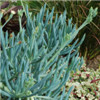

仙人掌科底下的种类繁多，奇特的造型和强大的生命力让它成为非常富有观赏性的栽培植物， 仙人掌有外刚内柔之美，现在就让我们走进仙人掌的世界。
介绍多肉植物景天科Crassulaceae的一些基本信息，以及景天科底下多肉植物各属各品种的信息。
大戟科（euphorbiaceae），双子叶植物，有8属为多肉植物，本科植物的体内含有毒的乳汁， 杯状聚伞花序结构复杂，总苞内有少数雌花和多数雄花，还有护苞片和蜜腺。内含大戟属、麻疯树属、白雀珊瑚属、翡翠塔属等。
番杏科（Aizoaceae）茎为直立茎或平卧茎， 叶为单叶，对生或互生，叶通常为肉质，叶缘全缘（或稀为齿状），或退化为鳞片，常无托叶。代表属生石花属。
百合科（liliaceae）单子叶植物，草本，有根茎或鳞茎，叶多为莲座状排列或两列叠生， 是多肉植物中最重要的科之一。内含：芦荟属、苍角殿属、鲨鱼掌属、十二卷属等。

菊科（asteraceae）中的多肉植物，多形态各异，各有特色，有别于其它科属的多肉。 代表品种有蓝松，佛珠等
龙舌兰科（agavaceae）中有8-10属是多肉植物，茎长短不一，叶聚生茎基或茎端，肥厚， 通常排列成莲座状，叶缘和叶尖常具刺，花序高。常见属有龙舌兰属、仙宝属、肉锥花属等
宁可居无竹
不可居无肉